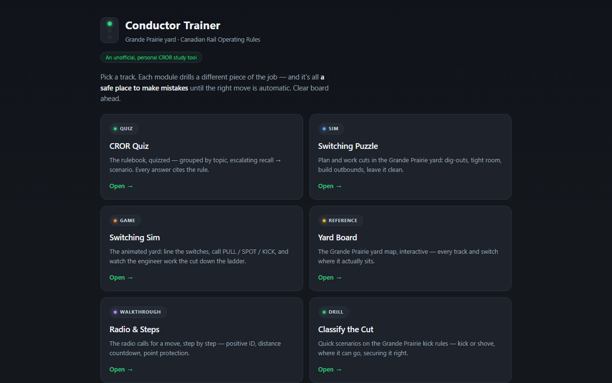
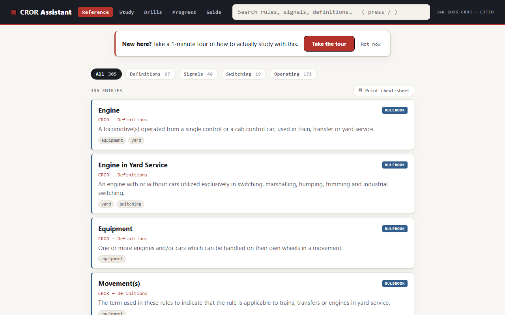
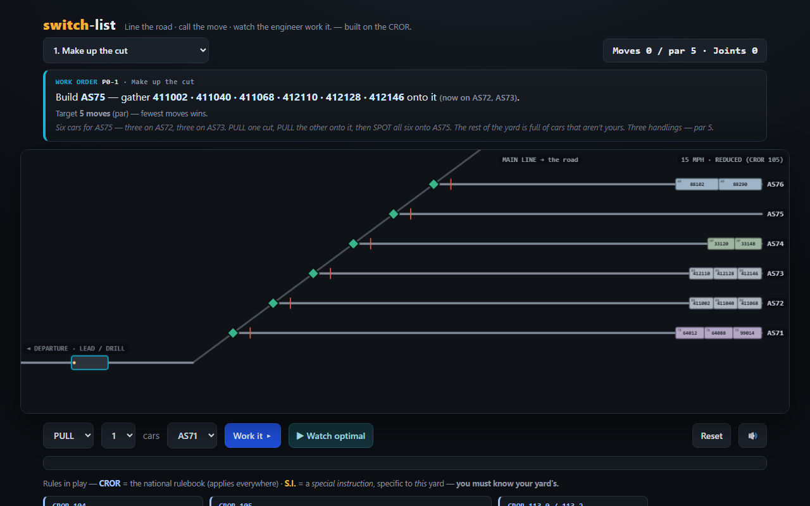
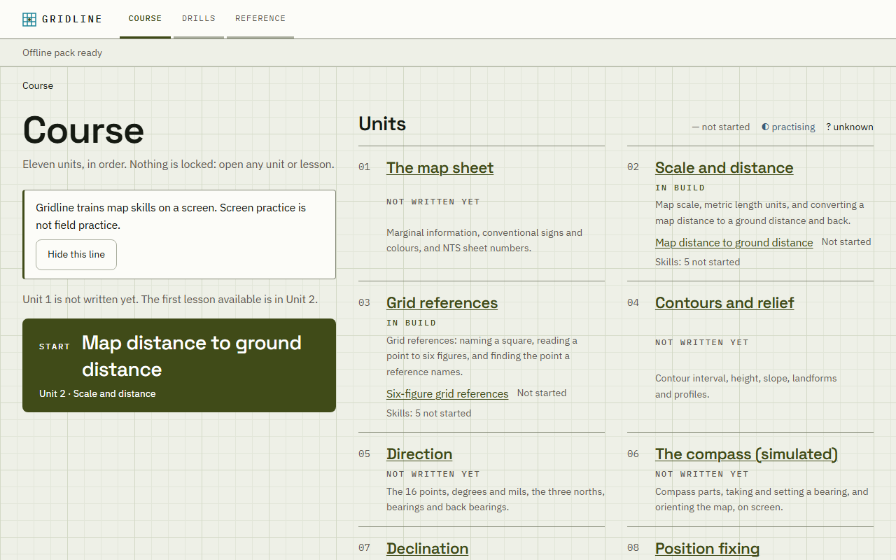

Jordan Doerksen
Three projects first, then every project that runs, by kind.
32 projects that run, by kind
- Instruments 7
- Trainers 6
- Games 5
- Tools 8
- Sites for others 6
Figures measured 2026-09-30 from the repositories on this machine, and reproducible from them. Nothing here is estimated.
The method: design-first and its harness
The gates, loops and rules every project goes through, and design-first, the kit that enforces them. One page, one chapter at a time.
Read the method →Trading desk
A read-only market desk. It records the tape, measures it, and reports what it sees. It never places an order.
The trading desk →Fulfillment
A deterministic corporate space survivor. Fly the shift, draft the rack, meet management. Every courier is replaceable.
Open Fulfillment →Instruments
- Sentinel-Suitebuilt
- Underwriterbuilt
- Wardenactive
- Cropbuilt
- Macroscopebuilt
- Richterbuilt
- Spectrumactive
Sentinel-Suite
Trading builtA read-only cockpit for ES & NQ futures.
Open Sentinel-Suite →Underwriter
Trading builtDecides whether selling today's SPX options is a defensible idea.
Open Underwriter →Warden
Trading activeThe self-hosted workspace with the whole Sentinel desk inside it.
Open Warden →Signals
Crop
builtA SQLite buffer that meters news into one local LLM.
Macroscope
Signals builtThirteen macro feeds, a lexicon bouncer, and a local LLM judging market impact.
Open Macroscope →Richter
Signals builtReads world news for how big and loud a story is, then posts magnitude-scored cards.
Open Richter →Spectrum
Signals activeThe one that ate the other three.
Open Spectrum →Trainers
- Clear Boardlive
- CROR Signalslive
- CROR Trainer — Grande Prairielive
- CROR Training Assistantlive
- Switch Listlive
- Gridlinelive
Clear Board
Rail liveThe unified CROR qualification trainer — the one that absorbed the other four.
Open Clear Board →CROR Signals
Rail liveSignal recognition trainer and quiz — every aspect drawn, none guessed.
Open CROR Signals →CROR Trainer — Grande Prairie
Rail live
Rule drills, a switching sim, signals, and radio walkthroughs — modeled on a real CN yard.
Open CROR Trainer — Grande Prairie →CROR Training Assistant
Rail live
Search any rule, get the citation, then drill it.
Open CROR Training Assistant →Switch List
Rail live
Read the yard, line the road, and win in the fewest engine moves.
Open Switch List →Gridline
Navigation live
An unofficial trainer for Canadian topographic map skills.
Open Gridline →Games
Echo Bat — Night Harvest
Games liveA bat in the dark, harvesting fruit by sonar.
Open Echo Bat — Night Harvest →Fulfillment
Games liveA deterministic corporate space survivor.
Open Fulfillment →Games
Star Charter Pro
liveThe timed edition: heavy, drifty momentum and a refit every third plate.
Open Star Charter Pro →Tools
- Ask-Johnnybuilt
- Fun-Policebuilt
- Board of Directorsbuilt
- design-firstlive
- Skillsactive
- Tools (Godot binaries)active
- Useful Tools Demosactive
- Worklogbuilt
Ask-Johnny
Bots builtA deadpan persona bot for the group server.
Open Ask-Johnny →Bots
Fun-Police
builtA tiny ban-list bot.
Tools
Board of Directors
builtSix finance-creator brain models convened as a deliberating board.
Open Board of Directors →Tools
design-first
liveA working method for building with coding agents, as a Claude Code plugin: interview before code, every rule graded by what enforces it, a Doctor that checks the disk.
Open design-first →Tools
Skills
activeThe house Claude-skill library — vendored upstream skill repos, reused rather than reinvented.
Tools
Tools (Godot binaries)
activeA storage folder for the Godot 4.7 binaries, so game projects open without an install step.
Tools
Useful Tools Demos
activeFive single-file HTML demo tools for conductor life — rest planning, rule lookup, time claims — plus a bill splitter.
Tools
Worklog
builtBuilds a daily work log and a weekly value report straight from git history.
Open Worklog →Sites for others
- Bonnie Daylive
- Caddy Shed Golflive
- Garwood Grilllive
- Hoagie Boyzlive
- jordan-doerksen.github.ioactive
- Resumelive
Studio
Bonnie Day
liveA multi-page concept rebuild for a Wolseley resto-café, framed as a play in two acts.
Open Bonnie Day →Studio
Caddy Shed Golf
liveThree full design directions for a custom-fit golf shop, plus a printable proposal.
Open Caddy Shed Golf →Studio
Garwood Grill
liveA one-page concept site for a Pembina Highway diner, dressed in its own old-school brand.
Open Garwood Grill →Studio
Hoagie Boyz
liveA one-page concept site for a South Osborne sub shop, in the shop's own brutalist meme voice.
Open Hoagie Boyz →jordan-doerksen.github.io
Studio activeThis site.
Open jordan-doerksen.github.io →Resume
Studio liveOne resume.json drives the web page and the printable Word/PDF, so they can't drift apart.
Open Resume →14 more projects, frozen and retired included, are in the Tool Desk. The method behind every project is written down: gates, loops and rules.